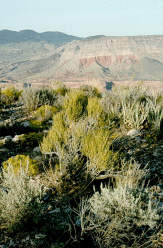
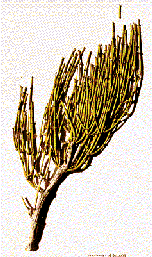

Crystal M e t h a m p h e t a m i n e
Looking for a way to make great chili?

Crystal M e t h a m p h e t a m i n
e
Looking for a way to make great
chili?
It is not easy to learn, but the first batch makes it worth all the effort . Once your set up, and have a proceedure you like, it is a cake walk. There is no simple, easy way. A lot of details have to be figured out. This is not a recipe, although some of the very best are included. Before the hive existed, there had never been free access to a database, that contained such information. This is a composite of that information, as seen through my eyes. Special attention was paid to the older procedures, because so much of the early work is not available, and it is important, to learn the secrets of those early alchemists.
Eventually you will be able to design your own procedure. Yes, you will become that proficient, and knowledgable, many of you will make some discoveries that will be significant, there is so much more that needs to be uncovered.
What to learn, begining at day one! The learning curve is
not linear but exponential, slow at first , and then taking off at a full gallop
with many sudden flashes of your own brilliance as you uncover another layer of
magical m e t h lore.
How to acquire ephedrine, Iodine, and red
phosphorus, and other needed reagents.
How to clean up commercial and
industrial sources of the reagents
How to acquire equipment or make caveman
substitutes.
Design a procedure, or use a ready made one and modify it.
How to do a Bio assays (get high)
SWIM (Someone Who Isn't
Me). SWIM does everything, You are only a dreamer, who may have
heard about this while dreaming Since you would never do anything illegal, you
have no first hand knowledge of these things.
It is good to be a little confused, it makes you think.
So when there is
a point of confusion, focus upon it, just dig in a little deeper and
uncover the mystery.
It is a language game you must learn the language
of chemistry and science. The information is here, You are never far from the
answer, . 
Here is a method to assess what you already have,
and what you need.
Yes =
0 No =
1
1._______ Have you had any formal chemistry training?
2._______ Is there someone who will show you the procedure, hands on?
3._______ Do you now have access to red phosphorus or iodine?
4._______
Do you have any equipment, flasks, funnel, filters etc.?
5._______ Do you
have a few hundred dollars to buy chemicals & equip?
6._______ Do you
have a partner to help in acquisition ?
Total _________________Add up your score.
This number indicates the
months, it may take to acquire all the stuff, and be sucessfull,
A basic knowledge of Chemistry is important to understanding .Use and care of
equipment, terminology of common chemicals, weights and measures. The
better your understanding of chemistry, the more you
will appreciate the details presented.
Some of the best cooks know
very little chemistry, they have been shown how to do this.
Most of the best
cooks know chemistry..
Acquire at least one
General Chemistry ,basic, 1st year college level, text book, old
books are just as valuable as new, chemistry is still chemistry. This will solve
the language barrier, between what is written and what you think it means. Terms
like wash, dissolve, separate, have a very specific procedural meaning in
chemistry, different from what you may assume that they mean.
It is not Free, The cost for this
information
These are dreams covering over two years of
research and hundreds of successful experiments, ranging in sizes from 5
grams to 500 grams. I demand a couple of things from you:
Dream only about the creating very best and cleanest product possible.
Dream that you observe the items marked


Other
Ephedra larger picture #1
Other
Ephedra larger picture #2
The terms Sudafed - Pseudoephedrine - Ephedrine - E - sudo. Will be
considered as similar when dreaming this document, although there is a
difference in the physical properties of pseudoephedrine and ephedrine,
Pills are usually 30mg or 60mg, the time release are 120mg to 240mg of
ephedrine / tablet
n many ways this is what it is all about the DEA has spent millions trying to gum up the works, by adding blockers, binders, and goos to ephedrine pills. This is where most failed reactions have the problem, " stuff in the ephedrine."
Pseudo-ephedrine is sold in two forms both are salts
1.
Pseudoephedrine hydrochloride (HCl ) - This is what you want until you
graduate from the New Bee class
2. Pseudoephedrine Sulfate(SO4)- has to be changed to a free base state
before it can be used
Also the sulfate salt is only sparingly soluble in
alcohol, so it must be extracted with water
Other shitty ingredients A second method for Methocel(not the same as
microcrystalline cellulose), is to dissolve the pills in water, don't filter
(because you can't) that is what methocel gums up. Freeze the mixture in ice
cube trays, takes many hours. You can boil the methocel pills in water and screen off
the scum that floats to the top , then freeze the water and filter , this works
well. One item rarely listed as an ingredient , even though it is the main filler
of the pill is CaSO4 Some brands of E are not found OTC, but are BTC behind the
counter, in your dreams. SWIM will ask for it. These are the thin
white tablets 60 mg /120 tabs or in each bottle. You will dream about them
in pharmacies, Indian smoke shops, HEAD SHOPS, convenience stores, super
markets,. vitamin stores. Extracting from pills It is only necessary to do one of the following methods, Don't need to
do both Solvent
Extraction of Ephedrine - Method I There are many ways to clean up the ephedrine pills depending upon what is in
them. The following method is rather generic and will do the trick 85% of the
time. It removes Waxes, solid fillers(Calcium-SO4) This is the most dangerous part of the entire process because of the fire
hazard when evaporating the methanol or denatured and because of the acetone
vapors. - Keep a wet towel handy, to smother fires or flames on
volatile liquids,. Removing the
red coloring 1. Crush or powder the pills, use a
blender, 2. Methanol or Denatured Alcohol Soak the powder in methanol or denatured for at least
several hours. Filter Save - the alcohol and ephedrine
(liquid), set the solids (junk) aside to dry and test later
for additional E , Evaporate -the alcohol and ephedrine (liquid) until it dries
to a solid white powder. 3. Distilled water, 4. Acetone (optional) Extra tips.To Increase your Yield
of ephedrine and Chili Ephedrine Acid Base extraction - Method II
This is the full blown Acid base extraction. Many short cuts in the A/B can
be taken, once you have the general procedure down. It is an an effective
method. This works with pseudo-HCl and pseudo Sulfate Contents Reagents Separate layers pH 12-14 Washing the Non polar/Ephedrine with water
Final Step Removal of Ephedrine from the Non polar
solvent. Salt of ephedrine
Slower safer reaction
Too much acid
To figure How much E you should have example 1 example 2 example 3 Siphoning can be very dangerous, using these volatile and
caustic chemicals . This is a safer way to get the siphon started. If
there are vapors in the plastic bottle, even this can be harmful if the
vapors are inhaled. Hold neck of coke bottle in left hand, run aquarium tubing
between index and middle fingers of left hand, and into bottle several inches.
Place other end of tube in the fuel of coffee pot,. Hold coke bottle at a level
lower than the coffee pot (for siphoning) one hard suck between finger and thumb
of left hand to start siphon. Drain only the fuel into bottle, no emulsion
should go in. The Coffee
Pot - Emulsions If you used 4 bottles each with 120 tablets each tablet is 60 mg
CAUTION
If you panic and flee, the fire will
get out of control, once it reaches your cans of solvents it will blow, you may
injure those who are unaware of the danger, and you will soon be arrested.
Wear safety glasses, the hot lye will erupt
when adding to it. keep a water source for eyes and hands nearby in case the
acid or lye gets on you.
END - PART 1
Avoid
dreams containing Methocel, Aspirin, Povidone, Acetaminophen, Triprilidine
or Guaifenesin- these substances require additional
procedures to remove.
Methocel
The use of
plastics cellulose-polyvinyl-foods and synthetic foods has finally breached the
AB because these are soluble in everything, one cure is "The Cure" heating the E
or chili with Toluene then removing the toluene and plastics, this is done as
many times as needed usually three to remove this food additive from the
product.
then one or two
cubes at a time are placed in a filter as they melt the water and E melt first
and pass through the filter, then the methocel melts and gums up the filter. The
saddness is the methocel will still have trapped some E in it so save the filter
goo, wash it with water and repeat the process.
The scum is methocel and with lots of E, so
save the scum, boil it, freeze, and filter again. It is safe to taste the scum
for the presence of the bitter taste of E.
gypsm(wallboard), It is so commonly used as a filler it
is not listed. It is not very soluble in water and alcohol, but it is a fine
powder that can easily slip through coffee filters. For this reason, letting the
pill solution settle, before filtering it, allows the gypsm to settle to
the bottom, this helps the reaction and keeps your product sulfate free,
which makes it much better.
Dream of walking into a head shop and asking for
"ephedrine", they will take care of the rest.
When asked, what kind?
Simply reply "What is the best selling?"
If asked how many? reply, "As
much as I can get"
Remember that your whole family has nasal congestion, so
it best to get as many as possible.
Be prepared to spend about $2-$4 / gram
-
There are restrictions on amount of E you may purchase a day,
It is approximately.
4 bottles of 120 tablets 60 mg/tablets /
store/day. (4btl x 120tab x .060gm) = 28.8 grams = $75 Chili sells
for $60 /gram
Use either the
1) Solvent extraction or
2) A/B extraction
, magnesium stearate,
Micro crystalline cellulose , lactose, Sodium starch glucolate, and numerous
other things.
1) common funnels -
buy a set of various sizes plastic is usually OK
2) cotton balls - a bunch of them
- one or two are put in the neck of the funnel
3) coffee filters - 4 are stacked
together in the funnel
4)
Denatured alcohol or Methanol
5) Acetone - Hardware or beauty
supply 1 gallon
6) Distilled
water several gallons
7) Vision ware cook ware by Corning or Stove top safe glass bowls.
Porcelain crock pot or Teflon pans may work
8) Several Carafes or flasks
-glass bottles
9) heat source
- hot plate or warming tray, stove, electric skillett or woks
10) Small fan- Clip-on anywhere
type or whatever you have
Evaporating is safest with Corning Vision
ware. Vision ware will not break when heated or chilled. Corning also makes
Pyrex. Not all pyrex is temperature resistant .Unless you use Vision ware you
have a 90% chance that a bowl will shatter under the heat (very dangerous).
Corning ware for use on the stove top is excellent but it is not clear(see thru)
Avoid washing your glassware with soap, unless you rinse it over and over
and over again.
Use water, or acetone, or acetone and salt, the soap leaves
a residue of sulfates
Look at it this way , It is not a matter of "if" you have a fire, it
is "when" you have the fire. Will you be prepared.
Water & hoses only spread the fires of liquid
petroleum distillates. You must cut off the oxygen supply.
Remember, you promised to
to the safety thing, this is your turn to pay me back, get out a wet
towel.
If using red or other color coated pills, begin
by testing a coated pill in acetone to see if the color coating comes off.
If the red comes off with acetone then wash them in acetone to remove the
coating. Acetone will not dissolve away any ephedrine.
If the color coating
does not wash off with acetone, then place the pills in a stainless steel
strainer or a colander. Spray or toss a very small amount of water
on them , shake to loosen up the red , you don't want it so wet that the
red color is dripping off, yet , You want to loosen the red but not
dissolve the ephedrine out of the pills, do more with mechanical
shaking, Now take acetone and rinse away the red you loosened up
with water . repeat as needed. A little red on the pills, is
not a problem.
Usually
done dry, if you over-blend when wet, then the air bubbles become a
problem
Standard Filtering with a
funnel, cotton balls or piece of a paper towel is pressed in the
neck of the funnel and 3-4 coffee filters added on top, wet the filters
with a little clean solvent, first.
After allowing time for
the mixture to settle, decant (pour off) only the supernatant (top
liquid) into the filter, leaving the solids in the container, otherwise you
will plug up the filter. And some of the gunk may come through the coffee
filters producing a cloudy solution. If a solution is cloudy after filtering,
it should be set aside, until it settles then re-filtered.
There have been
increasing problems using coffee filters , they are too porous and pill
blockers are added that will slip through these pores, it would be best to
acquire a buchner funnel, filter papers( medium), and a vacuum source,
Decanting the supernatant, and a cotton plug or paper towel plug in the
neck of the funnel, is one good way to insure success, this means it has
to settle before filtering through a coffee filter. Those solid fillers
can cause the reaction to fail.
Vacuum Buchner funnel -
If you have one hook up the vacuum , wet the filtering plate, place your paper
flat on the bottom, nothing should be on the sides, wet the paper, be certain
of a good seal. Pour the pill liquid and fillers into the funnel ,
allow some of the pill fillers to coat the bottom about 2 inches deep . The
pill fillers can be used as a filtering medium, just
like diatomaceous earth , no need to wait for it to settle , just
mix it up and pass the fluids through the filter repeatedly until it comes
through crystal clear,
Sand Filtering - excellent, I suggest you
build one sooner or later,
Safety --To
evaporate volatile compounds, use a fan to blow air
around flammable fuels ,disperse the fumes and prevent a
fire.
If unsure if you have fully extracted the ephedrine is? do a taste
test. Take some of the original pill sediment, let it dry and taste a small
bit, if it has a lingering bitter aftertaste it still has ephedrine in it. The
alcohol is bitter but you won't taste it after a few seconds. The ephedrine
will still leave a bitterness in your mouth for several minutes
It should be mastered if you expect to be
good at this Chili business. Why?
Because unless you steam distill, the
final extraction and purification of Chili itself is a variation of this
procedure.
The common error is not a high enough pH, so the
goods stay in the water layer, run it up past pH 12.5 even past pH-13+ until you
are experienced.
Adjust to pH 12.5-14 moves E into non polar
solvent
It is possible to do this without any non-polar (fuel )solvent. if
over 1 ounce of E is used.
Shake it moderately, try to not
get a lot of air mixed in.

You now have very pure Ephedrine in the free base
oil soluble state. You may either use the free base E or the Salt of E.
Again Add
Water - about half as much distilled water as fuel / ephedrine to the
separatory bottle
Then add
30% HCl(muriatic acid) to re-make the Ephedrine HCl salt - about 4-6
drops HCl/gram of sudo, this moves the ephedrine down into
the water layer
Shake
Check water to pH
between 7 to 8
Separate, place water/sudo in evaporation bowl.
Evaporate away the
water
Discard the fuel layer
If you add too much acid - pH less than 6, do NOT try to adjust with lye,
you will end up with a major amount of salt
Go ahead and separate the
layers , evaporate the water, you will smell the very strong HCl gas boil off
near the end (don't breathe too much of this), when you have the solid, then
let the pan cool, add acetone, crush up the crystals. lett it settle
then pour off the waste acetone through a filter, try to keep the crystals in
the bowl and rewash.
crystals with acetone until they are white
Acetone Wash
Acetone is the most dangerous of these chemicals because it is a
fire hazard. The acetone vapor will crawl out of a container and flow
invisibly along a counter top until it hits fire then Poof a hot rapid fire
begins. 
You
may return to the coffee pot to reclaim more E from the emulsion.
The
emulsion often has very little E in it , so don't be too concerned with it
unless your missing more than 25% of your E
Number of pills times
the miligrams / pill
60 pills that are 30mg /pill
60 x .030
grams = 1.8 grams
4 bottles, each has 120 pills, that are 60mg /pill
4 x 120 x .060 grams = 28.8 grams
10 packs of time release E, 240mg/ pill, 5 pills/ pack
10 x 0.240 gram x 5 = 12.0 grams
The ideal interface between the two
layers is almost undetectable, when viewed from the proper angle it should look
like a mirror. The middle layer is an emulsion of oil and water and junk, plus
sudo and wax. A thick emulsion, that won't separate, may mean un-acceptable loss
of of product, here are some fixes.
Place emulsion in coffee pot on a hot
plate,
Add toluene, works well
Add more lye, not a good idea,
above pH 13.
Add acetone ,very carefully, it will effervesce violently.
Add ether, works great, but who has ether?
Add lots of salt ,
works good
Add hydrogen peroxide (capfull at a time it will effervesce
violently)
Stir, stir ,
Wait it out, hours ?
One or a
combination of these, will help take down the emulsion.
Remove the fuel And
proceed as mentioned above "Separate
layers at pH 12"

YIELD calculate return examples
if you use 10 tablets that are 240 mg each
Initial weight =
10 x 240 mg = 2,400 mg this is 2.4 grams
Final weight -
if you recovered 2.0 grams
Yield = 2.0 / 2.4 x 100% = 83
%
Initial weight = 4 x 120 x 60 = 28,800 mg this is 28.8
grams
Final weight - if you recovered 26 grams
Yield = 26 / 28.8 x 100% = 90%
You should get a 80%-90%
return on the sudo. It is possible to get 95% but not easy,. with each operation
you loose 5%,
The danger is fire from evaporating the alcohol and acetone
Remember water will only spread the fire and flames on these
fuels
ALWAYS Keep a wet towel within reach in case of fire. this will
smother the flames.
The fire department looks for this type of thing as cause for a fire,
If the friendly fireman enters your house, your rights are shot to
hell, he will fuck you up.
{kind=link}
{kind=link}